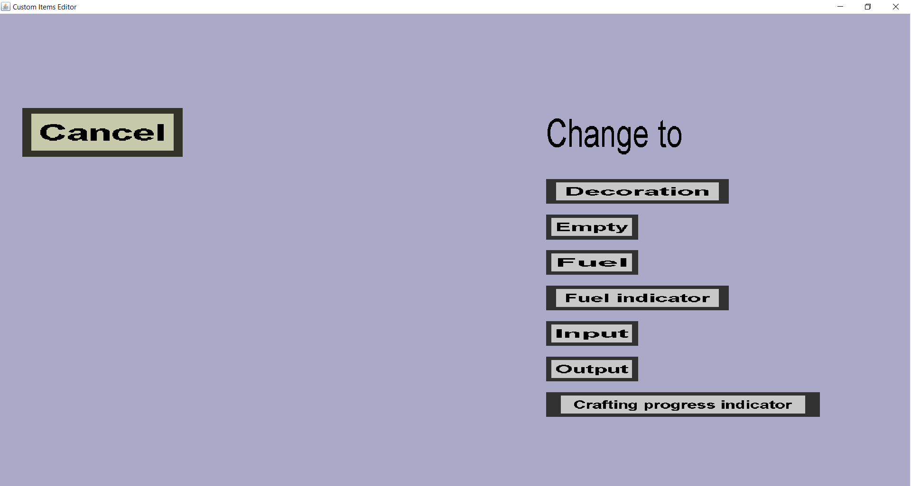

The slot creation menu can be used to create a new slot for a given custom container and put
it in its slot grid. Slots play a very important role in custom containers because custom containers
are not much more than a chest-like inventory menu where each inventory slot represents a slot of
the custom container. There are a couple of different types of slots, currently 7. Every type of
slot has its own button in this menu, which looks like this:

-
The 'Cancel' button is the only button in this menu that does not correspond to a slot
type. Clicking it will take you back to the container edit menu
you came from.
-
The 'Decoration' button will take you to the slot display creation menu.
Decoration slots are slots that will contain an item of your choice, but the players won't be
able to take the item from the slot or put another item in it. As the name implies, it is simply
a decoration for the container. If almost all slots are decorations, it is clear for players that
the remaining slots are usable (if all slots except the inputs and outputs are filled with
for instance black glass panes, the input and output slots are the only empty slots, which makes
it easy for players to understand).
-
The 'Empty' button will make the slot empty (again). Empty slots do not contain an item and
players can not put items in them. Empty slots are thus always empty. When
creating a new custom container, the slot grid is intially filled with such empty slots.
-
The 'Fuel' button will take you to the fuel slot menu. Fuel slots
work very similarly to the fuel slot in a regular furnace: players can put item in it,
and the furnace will start burning if the item is valid fuel and there is an item ready
to be turned in the input slot. Unlike furnaces, there can be multiple fuel slots (the
fuel mode of the container determines how this works exactly) and fuel slots can have
a custom fuel registry (you can choose which items count as fuel, which items don't,
and how long each item will burn before it is gone).
-
The 'Fuel indicator' button will take you to the
fuel indicator menu. Fuel indicators are linked to a
single fuel slot and have a dispay item and a placeholder item. When the corresponding
fuel slot is burning, the display item will be shown in the slot. When the corresponding
fuel slot is not burning, the placeholder item will be shown in the slot. Also, the
stacksize will decrease as the remaining burn time counts down. Just like decoraiton
slots, players can't take items from fuel indicator slots or put items in them.
Regular furnaces use the flame icon below the fuel slot to indicate how much burn
time remains. Unfortunately, custom containers do not have this luxury
(an attempt was made to use regular furnaces for custom containers, but minecraf and
bukkit didn't cooperate...), so you will have to use fuel indicators slots instead.
-
The 'Input' button will take you to the input slot menu. Just like
regular furnaces, input slots are the slots where players put items they want to smelt.
But unlike furnaces, you can have multiple input slots.
The recipes of the custom container you're editing determine which items are considered
to be inputs for which slots.
-
The 'Output' button will take you to the output slot menu. Just
like regular furnaces, output slots are the slots where the result items appear when an
input item is converted. Players can take items from the output slots, but not put items
in them. Unlike regular furnaces, custom containers can have multiple output slots.
The recipes of the container determine which items will appear in which output slots
for which input items.
-
The 'Crafting progress indicator' button will take you to the
crafting progress indicator menu. These kind
of slots are used to show the players how much time remains before the inputs of a recipe
will be converted to the outputs. In regular furnaces, this is accomplished by the arrow
between the input slot and the output slot.
Just like fuel indicators, custom containers don't have this luxury either, so an
alternative was needed, which are crafting progress indicator slots.
These slots have a placeholder item and a display item. The display item is shown when
inputs are currently being converted to outputs, and the placeholder item is shown when the
container is idle. Also, the stacksize of the display item will increase as the time until
the inputs are converted decreases.
-
The 'Storage' button will take you to storage slot menu.
Storage slots are slots that don't participate in container recipes,
but players can use these slots to store any item they want. (So storage
slots are basically 'chest' slots.)